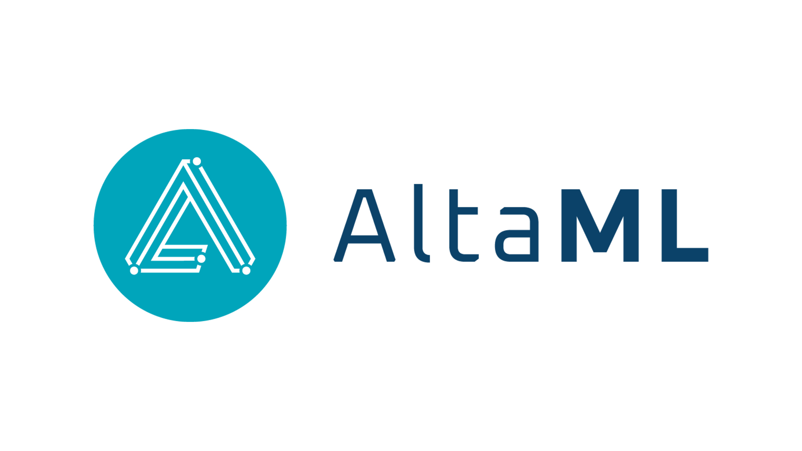
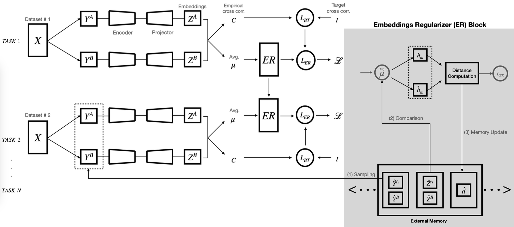
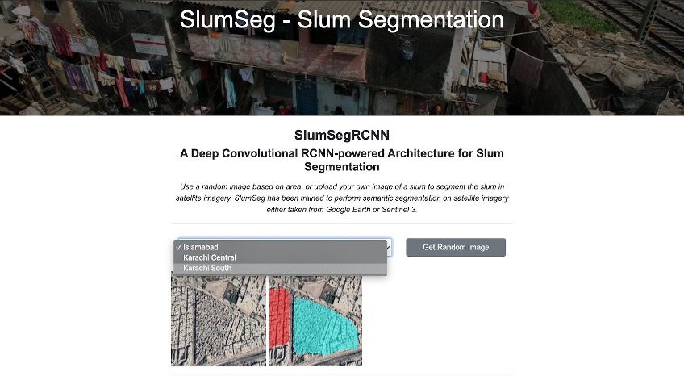
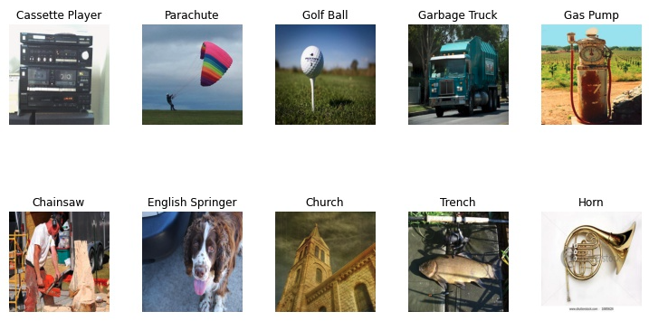
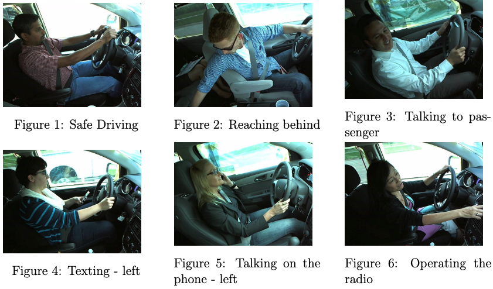

|
Hamna Moieez
Machine Learning Engineer @ ClinicOS, Inc.
I am working on developing generative AI (Generative Adversarial Networks (GANs), Stable Diffusion, DiT) based methods to generate realistic, and high-fidelity postoperative images given preoperative image for various plastic surgical operations.
Previously, I did my graduate studies from Sapienza University of Rome, Italy in engineering in computer science. I was fortunate to be advised by
Dr. Simone Scardapane.
My research focused on continual learning systems, specifically looking at the problem of continual self-supervised learning for Earth Observation (EO).
I worked on designing systems capable of learning to segment continually from sparsely labelled remotely sensed data.
Email /
Resume /
LinkedIn /
Github
|
|
|
|
Machine Learning Engineer (Remote)
ClinicOS, Inc., Los Angeles, USA
Working on Generative AI (using GANs, and Stable Diffusion) to generate realistic pre, and post operative images for various surgical procedures.
|
|

|
Associate Machine Learning Developer
Applied AI Lab - AltaML, Calgary, Canada
I worked as an Associate Machine Learning Developer at Applied AI Lab,
AltaML. My work revolved around automating functioning of industrial plant's operational
cycle. Majority of the industrial plants require manual descriptive configuration files (often in
proprietary formats understandable to only plant operators) to perform certain operations. I
designed machine learning pipelines to auto-generate these configuration files and
auto-complete different operation modules using Large Language Models (LLMs).
|
|

|
Continual Self-Supervised Learning in Earth Observation with Embedding Regularization
Hamna Moieez,
Valerio Marsocci,
Simone Scardapane
International Geoscience and Remote Sensing Symposium (IGARSS), 2023
code / talk / graduate thesis
We consider the problem of semantic segmentation, a problem that lends itself to various remote sensing
applications. To this end, we build on the work done in the domain and introduce a new
algorithm, CBT-ER.
This work was my graduate thesis, and the paper got accepted to to flagship conference of
IEEE Geoscience and Remote Sensing Society (GRSS).
|
|

|
Slum Mapping and Localization using Remote Sensing Imagery
Undergraduate Thesis, 2020
code / video
In this work, I worked on understanding how slums form and change right inside major metropolitan cities. In addition to collecting dataset from satellite imagery,
which included manual markings of slum settlements, I developed a pipeline to monitor, segment and localize slums in several areas of the cities.
Such an automated pipeline is important to inform revelant authorities so as to redirect their rehabilitation efforts and resources appropriately.
|
|

|
Self-Attention Networks (SAN)
code / report
Implemented and tested Self-Attention Networks (SAN) for graduate course in machine learning.
The project was a tensorflow implementation of pair-wise and patch-wise self attention network for image recognition.
|
|

|
Distracted Driver Detection
code / report
We looked at the problem of driver activity monitoring to detect any distraction that the driver maybe indulged in whilst operating a motor vehicle.
We learned a fully functional, real-time and responsible system built-on the state-of-the-art machine vision stack
capable of examining the in-vehicle activity via live dash-cam feed and responding as required.
|
This design is taken from ✩
|
|
{kind=link}